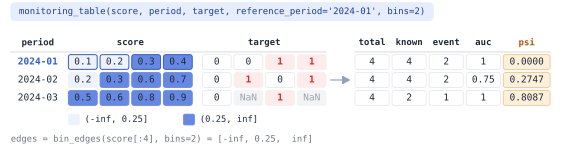
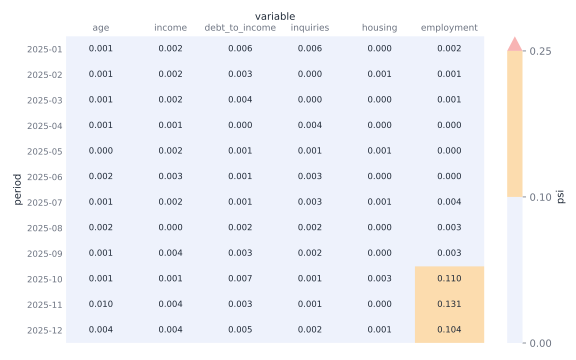

模型监控#
使用中的模型每月或每季度都要检查：它面对的人群是否仍是开发时的人群？它对结果的排序是否仍和以前一样好？ monitoring_table() 用一张表回答评分的这两个问题，每期一行：观测数、已知结果中的事件数、AUC、Gini 和 KS，以及评分相对基准样本的 PSI。 stability_table() 给出模型每个变量在每一期的 PSI，用于找出造成偏移的变量。
模型连同其 分箱方案 投入生产后，监控按期重复 模型表现 和 群体稳定性指标 中的度量。随后 模型验证 按监管机构对内部评级模型的要求每年验证一次模型， Vintage 与滚动率分析 则跟踪模型所通过的贷款。
定义#
表中每一行描述一期的观测，例如一个月的申请。观测的结果在其表现期结束后才能得知，例如放款后十二个月，而且只有获得贷款时才有结果。第 \(t\) 期的事件率是其已知结果中的事件率，
AUC、Gini 和 KS 与 模型表现 中的相同，只在该期的已知结果上计算。评分的稳定性是评分段上的 PSI，评分段边界只在基准评分上拟合一次，因此每一期都在同一组评分段上比较。记 \(q_i\) 为基准评分落在评分段 \(i\) 的占比， \(p_{t,i}\) 为第 \(t\) 期评分的相应占比，二者都按 群体稳定性指标 中的方法平滑，则
基准可以是其中一期，通常是开发之后的第一期，以 reference_period 传入；也可以是单独的样本，通常就是开发样本本身，以 reference_score 传入。PSI 不使用结果，因此一期的评分一出来就可以计算。与 模型表现 中一样，评分随风险升高：PD 直接传入，评分卡分数取负后传入。
计算示例#
三个月、每月四个评分，其中 3 月有两个结果尚未得知。 bins=2 时，1 月评分的中位数 0.25 把评分分成两个评分段：
>>> import numpy as np
>>> from kivi.monitoring import monitoring_table
>>> score = [0.1, 0.2, 0.3, 0.4, 0.2, 0.3, 0.6, 0.7, 0.5, 0.6, 0.8, 0.9]
>>> target = [0, 0, 1, 1, 0, 1, 0, 1, 0, np.nan, 1, np.nan]
>>> period = ["2024-01"] * 4 + ["2024-02"] * 4 + ["2024-03"] * 4
>>> table = monitoring_table(score, period, target, reference_period="2024-01", bins=2)
>>> table[["total", "known", "event", "event_rate"]]
total known event event_rate
period
2024-01 4 4 2 0.5
2024-02 4 4 2 0.5
2024-03 4 2 1 0.5
>>> table[["auc", "gini", "ks", "psi"]].round(4)
auc gini ks psi
period
2024-01 1.00 1.0 1.0 0.0000
2024-02 0.75 0.5 0.5 0.2747
2024-03 1.00 1.0 1.0 0.8087
1 月每个评分段各有两个评分，2 月分别为一个和三个，3 月分别为零个和四个。2 月的 PSI 为 \((0.25 - 0.5) \ln 0.5 + (0.75 - 0.5) \ln 1.5 = 0.2747\) 。3 月的空评分段平滑为 0.5，得到占比 0.5/4.5 和 4/4.5，PSI 为 0.8087。2 月的事件 0.3 和 0.7 在四对中有三对高于非事件 0.2 和 0.6，因此 AUC 为 0.75。3 月的两个已知结果，0.5 处的非事件和 0.8 处的事件，排序正确。

计算示例。一月评分的中位数把每个月都分成同样的两个评分段，每个月成为表中的一行。#
监控报告#
本页示例使用 make_applications() 生成的合成申请数据，由一张现行评分卡打分，其 PD 为 incumbent_pd ；见 示例数据 。一份 10,000 笔申请的样本作为开发样本，另一份代表 2025 年的 24,000 笔申请，每月 2,000 笔。从 10 月起，一项面向长期雇员的营销活动结束，其中一半不再申请，申请人的构成随之改变；示例去掉了最后一个季度一半的长期雇员：
>>> import pandas as pd
>>> from kivi.datasets import make_applications
>>> development = make_applications(n_applicants=10000, rng=0)
>>> applications = make_applications(n_applicants=24000, rng=1)
>>> months = pd.period_range("2025-01", periods=12, freq="M")
>>> applications["month"] = months[np.arange(24000) * 12 // 24000]
>>> rng = np.random.default_rng(2)
>>> permanent = applications["employment"] == "permanent"
>>> left_out = (applications["month"] >= months[9]) & permanent & (rng.random(24000) < 0.5)
>>> applications = applications[~left_out]
申请只有获批后才有结果，而且要等表现期结束。到年底时，9 月及之前的申请已有结果，最后一个季度的申请还没有。未知的结果以缺失值传入：
>>> known = applications["approved"] & (applications["month"] <= months[8])
>>> outcome = applications["target"].where(known)
>>> report = monitoring_table(
... applications["incumbent_pd"],
... applications["month"],
... outcome,
... reference_score=development["incumbent_pd"],
... )
>>> report.round(3)
total known event event_rate auc gini ks psi
period
2025-01 2000 1361 131 0.096 0.642 0.284 0.227 0.002
2025-02 2000 1383 142 0.103 0.646 0.292 0.226 0.006
2025-03 2000 1384 140 0.101 0.631 0.263 0.227 0.005
2025-04 2000 1328 132 0.099 0.640 0.280 0.245 0.007
2025-05 2000 1391 132 0.095 0.681 0.361 0.312 0.005
2025-06 2000 1350 139 0.103 0.615 0.229 0.219 0.011
2025-07 2000 1323 127 0.096 0.619 0.238 0.190 0.005
2025-08 2000 1321 112 0.085 0.644 0.287 0.256 0.004
2025-09 2000 1367 158 0.116 0.628 0.256 0.205 0.008
2025-10 1371 0 0 NaN NaN NaN NaN 0.019
2025-11 1329 0 0 NaN NaN NaN NaN 0.021
2025-12 1370 0 0 NaN NaN NaN NaN 0.032
十个评分段是开发样本评分的十分位组，由 bin_edges() 拟合，因此每个月的 PSI 都在同一组评分段上把该月评分与开发样本评分作比较。
最后一个季度申请的长期雇员减少，申请量随之下降。事件率始终接近开发样本中获批申请的 9.7%，Gini 系数在获批申请的 0.31 上下波动：
>>> from kivi.metrics import gini
>>> approved = development[development["approved"]]
>>> round(gini(approved["incumbent_pd"], approved["target"]), 3)
0.309

按月份的监控报告。上：申请数以及结果已知的申请数；最后一个季度还没有已知结果。中：每月的 Gini 系数，对照开发样本中已批准申请的 0.309。下：相对于开发样本评分的 PSI，最后一个季度也远低于 0.1 和 0.25 两个阈值。#
每月约 130 个事件，单月的 Gini 系数仅因抽样噪声就会波动几个百分点，因此应看几个月的趋势，而不是某一个偏低的值。最后一个季度没有已知结果，其区分能力为 NaN。
9 月之前 PSI 一直在 0.01 左右或更低，最后一个季度升到约 0.02 到 0.03：按常用阈值仍属于小幅偏移。申请人的构成变了，但就业状况只是评分的输入之一，因此评分的变动小于人群的变动。下面的变量报告显示哪些变量发生了变化。
基准也可以是某一期，例如一年中的第一个月。此时该期的 PSI 为 0，其他月份都与它比较：
>>> by_month = monitoring_table(
... applications["incumbent_pd"], applications["month"], outcome, reference_period="2025-01"
... )
>>> by_month["psi"].round(3).tail(4)
period
2025-09 0.009
2025-10 0.020
2025-11 0.017
2025-12 0.028
Freq: M, Name: psi, dtype: float64
解读结果#
列 |
含义 |
|---|---|
|
该期的观测数，包括结果尚未得知的观测。 |
|
结果已知的观测数，以及其中的事件数。 |
|
|
|
评分在该期已知结果上的区分能力，两类结果不全时为 NaN。 |
|
该期评分相对基准评分的 PSI，基于在基准上拟合的评分段。 |
每一列都应与开发样本对照解读，而不是与某个固定数值比较。区分能力只在获批的申请上衡量，它们的评分已被截断点截断，因此低于在全部申请人上的值：应与开发样本中获批申请的数值比较，如上所示。Gini 连续几个月下降，说明评分对新结果的排序不如以前。
评分的 PSI 沿用 群体稳定性指标 中的惯例：低于 0.1 为小幅偏移，0.1 到 0.25 为中等偏移，高于 0.25 为大幅偏移。评分发生偏移时，要看是哪些变量变了，以及事件率是否随之变化。小样本期的 PSI 和区分能力主要反映抽样噪声，因此应结合 total 和 known 一起解读，并在用某个数值触发预警之前先设定最小样本量。
本页的两个函数把分类型期的每个类别都保留为一行，包括没有观测的类别，其计数为 0，其他列为 NaN，因此即使某个月没有申请，不同样本的月度报告也能对齐。 vintage_table() 和 calibration_table() 会略去这样的类别，因此把它们的表与这里的表合并时，应按期的标签而不是按位置对齐。非分类型的期就是实际出现的不同取值，按升序排列。
变量稳定性#
stability_table() 接收每一期已分组的变量，给出每个变量相对基准样本分组的 PSI。两个样本都用在开发样本上拟合的分箱方案分组，见 分箱方案 。 inquiries 最常见的取值是 0，因此给定显式边界：
>>> from kivi.monitoring import stability_table
>>> from kivi.spec import fit_spec
>>> features = ["age", "income", "debt_to_income", "inquiries", "housing", "employment"]
>>> spec = fit_spec(
... development[features],
... development["target"],
... bins={"inquiries": [-np.inf, 0, 1, 2, np.inf]},
... )
>>> stability = stability_table(
... spec.cut(applications[features]),
... applications["month"],
... reference_groups=spec.cut(development[features]),
... )
>>> stability.round(3)
variable age income debt_to_income inquiries housing employment
period
2025-01 0.001 0.002 0.006 0.006 0.000 0.002
2025-02 0.001 0.002 0.003 0.000 0.001 0.001
2025-03 0.001 0.002 0.004 0.000 0.000 0.001
2025-04 0.001 0.001 0.000 0.004 0.000 0.000
2025-05 0.000 0.002 0.001 0.001 0.001 0.000
2025-06 0.002 0.003 0.001 0.003 0.000 0.000
2025-07 0.001 0.002 0.001 0.003 0.001 0.004
2025-08 0.002 0.000 0.002 0.002 0.000 0.003
2025-09 0.001 0.004 0.003 0.002 0.000 0.003
2025-10 0.001 0.001 0.007 0.001 0.003 0.110
2025-11 0.010 0.004 0.003 0.001 0.000 0.131
2025-12 0.004 0.004 0.005 0.002 0.001 0.104

模型各变量在每个月的 PSI，按 0.1 和 0.25 阈值着色。只有 employment 从 10 月起超过 0.1，因为此时一半的长期雇员不再申请。#
9 月之前每个变量都低于 0.01。从 10 月起， employment 升到 0.1 以上，属于中等偏移，其他变量则没有变化：在新申请人的任何结果出来之前，报告就已经指向了构成的变化。每个值都是仅对该月计算的 psi_table() 的 PSI，后者显示哪些组发生了变化：
>>> from kivi.stability import psi_table
>>> october = applications["month"] == months[9]
>>> psi_table(development["employment"], applications.loc[october, "employment"])[
... ["reference_share", "current_share", "psi"]
... ].round(3)
reference_share current_share psi
bin
permanent 0.655 0.492 0.047
temporary 0.197 0.287 0.034
self_employed 0.148 0.221 0.030
长期雇员的占比从 65% 降到 49%。新的构成下违约是否符合评分的预期，要等结果已知后才能看出；结果陆续出来时，应密切跟踪最后一个季度的事件率。
缺失值#
缺失的目标值表示结果尚未得知。大多数函数遇到缺失标签会报错，见 约定 ；
monitoring_table()则与swap_set()一样，把它视为未知结果。它计入total，但不计入known、event、event_rate和区分能力，因此尚未观测到的结果应以缺失值而不是 0 传入。已知结果中两类结果不全的期（例如上面的最后一个季度）的区分能力为 NaN，而不是报错。缺失的评分或缺失的期会报错：缺失的评分没有评分段也没有排序，没有期的观测也没有所属的行。
在
stability_table()中，缺失值单独成组，与psi_table()相同；只在两个样本之一中出现的组也会包含在内。
样本权重#
两个函数都接受 weights （每个观测一个非负权重），以及以 reference_score 或 reference_groups 传入的基准样本的 reference_weights ；基准期的权重取自 weights 。计数变为权重之和，这与 约定 对所有函数的约定相同，区分能力和 PSI 也按权重计算。在相同的评分段边界上，整数权重与重复相应行得到的表相同。整数 bins 按加权分位数拟合边界，与 bin_edges() 相同，因此其边界可能与重复相应行时的边界不同。
监控样本常常保留全部事件，但只保留部分非事件。下面保留每一笔有事件或结果未知的申请，但已知的非事件只保留四分之一，并给它们权重 4：
>>> sampled = (outcome != 0) | (rng.random(len(applications)) < 0.25)
>>> weights = np.where(outcome[sampled] == 0, 4.0, 1.0)
>>> sample = applications[sampled]
>>> def event_rates(**options):
... table = monitoring_table(
... sample["incumbent_pd"],
... sample["month"],
... outcome[sampled],
... reference_score=development["incumbent_pd"],
... **options,
... )
... return table["event_rate"]
>>> pd.DataFrame({
... "all": report["event_rate"],
... "sample": event_rates(),
... "weighted": event_rates(weights=weights),
... }).head(3).round(3)
all sample weighted
period
2025-01 0.096 0.289 0.092
2025-02 0.103 0.315 0.103
2025-03 0.101 0.295 0.095
抽样后样本的事件率约为全部申请的三倍，加上权重后则恢复到全部申请的水平，差异只在抽样噪声之内。
局限#
PSI 显示评分发生了变动，但不能说明评分是否仍能排序或预测结果。结果要在表现期结束后才会出现，因此最近几期的区分能力要么缺失，要么只基于很少的结果。
表中没有置信区间或检验。判断 Gini 系数或 PSI 的变化时要考虑该期的样本量，或者比较样本量相近的期。
表中不检查校准。把期作为
calibration_table()的分组，并只传入结果已知的行，即可比较每一期的预测违约率和观测违约率。每个变量对平均评分的影响是其 CSI，由
csi_table()逐期计算。
错误与警告#
整数 bins 在基准评分上拟合分位数边界。许多基准评分并列时（例如评分只保留一位小数），边界会重合，剩下的评分段就会变少。此时会发出 UserWarning ，每一期都在剩下的评分段上比较：
>>> import warnings
>>> with warnings.catch_warnings(record=True) as caught:
... warnings.simplefilter("always")
... rounded = monitoring_table(
... applications["incumbent_pd"].round(1),
... applications["month"],
... outcome,
... reference_score=development["incumbent_pd"].round(1),
... )
>>> print(caught[0].message)
tied edges leave 3 of the 10 requested bins; the value 0.1 makes up 56% of the fitted values, pass fewer bins or explicit edges
传入更少的箱数或显式边界（例如开发报告中的边界）即可消除警告。显式边界必须覆盖所有评分，因此两端应使用无穷边界；落在边界之外的评分会报错。
基准以 reference_period 或 reference_score 给出， stability_table() 则用 reference_groups ；两者都不给或同时给出都会报错。不是其中一期的 reference_period 会报错，并列出前几期：
>>> monitoring_table(
... applications["incumbent_pd"], applications["month"], outcome, reference_period="2024-12"
... )
Traceback (most recent call last):
...
ValueError: reference_period must be one of the periods Period('2025-01', 'M'), Period('2025-02', 'M'), Period('2025-03', 'M'), ..., got '2024-12'
标签列表不是期的标签，基准行的布尔掩码也不是评分样本，因此二者同样会报错。应把基准行的评分（例如 score[mask] ）作为 reference_score 传入。